BarbecueNight.com Page 7
The Every Thursday Night Barbecue At Dick Flaharty's
The most recent Thursday, followed by the previous barbecues...
4 September 2008: Camera man forgot camera
Hasty report: Web slave facing 4 hours of sleep, 2 hours of driving in a secret direction to Secret Creek, then all day long pulling a kayak up Secret Creek, over obstacles, just to get to the first night's camp, which, by chance, is somewhere just inside the official border of Paradise. An Alaska Passport is required (available on the Stuff page of AlaskaStories.com).
Yet another outrageous BBQnight.com. A lot of people. Adventure sorts from Canada, New Zealand, San Francisco, even Homer, Maine, caves, a lawyer, some government people, one working for the Queen of England, and a few of whom we are not sure if they were from, ah, the normal proximity to Earth.
The bottle of Homer Mead was delightful.
The web slave has heard a few Alaska stories, if you can imagine that, but this was the first time he heard of anyone shooting a moose near the garden, from the deck, with a Daisy BB gun. And it worked. The moose left.
The web slave was still laughing when the fellow grillmeister attending to the Kodiak venison, while the web slave was attending to the salmon, therefore casually mentioned that just last week he heard some sounds out in his garden, at night. He didn't have a flashlight, and the deck light did not reach the garden, so he picked up a BB gun. Now, this is the second BB gun story in a few minutes, in Alaska, where the stories usually involve a 44 magnum hand gun or a 375 H&H magnum rifle. He shot the BB gun over the top of whatever was making noise in the garden, and all hell broke loose as three, count them, 3 moose came out of his garden, into the light, with one running right toward him.
Serious caving stories and photos, involving some adventure sorts from a couple Euro nations. Secret caves in ah, a secret place.
From there things went into concepts not normally encountered, and much less often discussed by the humans, albeit within the bell curve of BarbecueNight.com, an inverted curve.
K. Bohaty, contact the Alaskan Alpine Club again, if you wish. Always interested in the old Fairbanks family stories of Alaskan climbing.
The web slave would articulate some of those stories, but the minute to upload this and start instant sleep before starting the moose chase, has arrived. And he is already 5 days late.
28 August 2008:
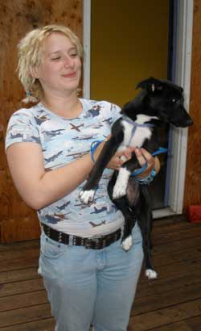
The evening's featured presentation was by the individual from the Netherlands assisting a Russian professor at the University of Alaska, with a climate change base line data project utilizing the habitat selectivity of Least Aucklets and some other such seabird, at the Pribolof Islands.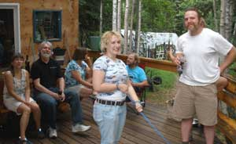
Beyond her current project, perhaps ahead of its time, we discussed her considerations of on water near-shore blended image observation of shore bird nesting and arrival/departure activity, for potential data perspective differential. Considering the well established phenomenon wherein observation alters the activity observed, and the consideration that varied techniques can be used to derive comparative and corrective details of observation-induced data alteration, and the scant work published on observation from on water near-shore visually blended observation sites, such as a stable blue color kayak, the opportunity for data-rich original work will at some moment derive adequate scientific funding for what could become a field focal point most effectively synthesizing data related to breeding population dynamics. While the birds clearly recognize any movement or animals on land, such as that of humans, since it represents a threat to the nests, and inherently react regardless of the human recognition of any reaction, water located animals and movements represent no human-recognized threat to nesting birds on shore. Therefore a more natural flow of nesting shore bird activity can be observed by an astute avian biologist to derive a data base line for all nesting shore bird observations.And then we got into the details of climate change measuring and predicting techniques.
Oh, the climate changes, so brace yourself.
The ice climbers are a bit miffed with the current atmospheric temperature trend but they remain confident with the net long range heat loss of planet earth, until the sun enters it red expansion phase. In contrast, the rock climbers are pleased with the melting glaciers that expose more vertical rock surface. Maintain your ice and rock climbing racks.
The grill was kept busy with the flow of food.
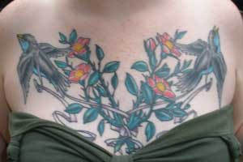
Tattoos where discussed.
A dissertation on extreme kayaking and pack rafting blended with an India adventure itinerary. Communication skills somehow got to politics, or vice versa. And StumbleUpon got stumbled upon. A small load of populus tremuloides got unloaded for the garage stove, from the AlaskanAlpineClub HQ where some betula papyrifera were planted to upgrade the visual image of the HQ entrance. Government was berated a bit, if you can imagine such a thing. What was the price of oil before the US DemocanRepublicrats decided to start another couple presidential ego gratification wars against the primary oil producing cultures, and called it a "crusade"? Unbeknownst to the common people, all DemocanRepublicrat political candidates are required by the party central committee to take a secret stupidity pill before the party will recognize them for the ballot. The proof is in the results.
And so it was recorded.
21 August 2008: Camera may not have come out of pocket. Too much happening.
Ran out of propane. Had to build an old fashioned wood fire in the barbecue grill made during the Exxon Valdez oil spill clean-up adventure. Well, the welder was being paid to weld on barges. Don't know how he had time to weld a barbecue also. Chitina red, wonderful kabobs, brats and sausage. Garden fresh salad and other stuff. A better than normal selection of fine wines.
The German volcanology and sea ice delegation offered dissertations on those adventures. The shapes of initially forming sea ice are visually duplicated in certain moist conditions on the wall ice of upper glacier moulins. The strata, visual appearance, chemistry and percentage of chemical concentrations of a currently active Aleutian Chain volcano are most intriguing.
The Yukon River report from the cabin building adventure next to the Canadian border included the blisters created by paddling the canoe hard enough to successfully escape a wall of torrential rain dividing the river. However, the rain was on the side where the crew had to later paddle upstream on the therefore flooding creek. The cabin is on schedule, yet to be built. Not sure if the border patrol knows the exact location, which is the way it should be.
Serious, I mean, serious waterfall kayaking movies by locals, of locals, on obscure Alaska creeks and rivers were presented. These guys are crazy even by Alaska crazy standards. I gotta get one of those hotdog kayaks, and the duct tape to put them back together after crunching rocks.
Okay web slave, back out to the AlaskanAlpineClub HQ improvement projects. And this time, try to get it right the first time.
14 August 2008: Photos of the 30 or so people and the 4,000 year old stone adze are in the camera.
Imagine being stuck anywhere else in the world on this night. Well, everyone at BarbecueNight could have named a few places they would rather be, but a few billion people would have rather been at BarbecueNight. At least two people who had been to other planets, and may have been from there, were here. And they only mentioned it to each other in passing, then got back to analytically considering what they were learning from the humans. The humans have much to offer in regard to what to not manifest.
Michelle of serious Alaska Range climbing was back in town from mid-Oregon horse country. Anguishing to be bound between the stationary rock spirits of the Alaska mountains and the mind spirits of galloping horses on the high plains. A bit difficult on the muscles also. The stone and ice-toned muscles in harmony with the mountains are not the fluid-toned muscles of the horse person in full stride through the sage with the storm clouds racing toward the same barn.
Where would you expect to find a 4,000 year old stone adze? Well? You might know of the Antique Road Show. And some people know of the Fairbanks Mall Show. Just the other day the web slave was shopping at the Mall, where he was marginally successful with some good deals on stuff that would certainly be useful some day. But what he noticed was the person walking from another dumpster with an old pair of skis. Because he is on the Alaskan Alpine Club Museum Committee, the web slave promptly walked over and offered the guy $3 for the skis. There was hesitation and then the guy declined the offer. So the offer was upped to 10 bucks. There was serious consideration, but the guy said that after the skis were fixed a bit, they would look good on his wall. Lacking financial where-with-all, the web slave complemented the wisdom of the finder, and asked to be invited to any future party to see the skis so displayed.
Oh, the 4,000 year old stone adze? Found at the Mall today in a box of other rocks. The humans have found and saved so much STUFF, filling the basements of museums and the shelves of garages and living rooms, that high quality artifacts are getting tossed out with old rocks saved for unknown perceptions. The future will record prehistoric civilizations apparently living in post-history garbage land-fills. Photo later.
Fresh smoked Chitina Red salmon (brown sugar brine), and basil grilled Chitina Red, and way too much other good food and wine.
Don and Ruth were there. Don the artist brought some large format fractal art. Beautiful. Don and Mo were there. We inquired of the good sailboat Scotty Ann currently in another country, in case we had to escape the country and find refuge on the high seas. Coert brought basil grilled Chitina Red and his story of going around a certain white water river cliff some distance from his kayak. Well, sometimes kayaks and horses like to run free.
Folks from other States and countries also there. A report was given on an independent biologically integrated water chemistry study of the upper Kaparuk on the North Slope being done by a Massachusetts entity establishing base line data for long term analysis of fill-in-the-blank. How that related to a Jaeger near the mouth of the Kaparuk, taking a guy's hacky sack, mid-air, out to a distant pingo could have only been established on one of those other planets or at BBQnight.com.
The photos later, if the web slave gets to it after finishing painting the green bus more green. He was the guy with the green paint on his fingers.
7 August 2008: Somebody tell the web slave what happened. I think he was there, but forgot to write up the report.
31 July 2008:
The entire show was booked. Guest speakers had to wait in line. The best wine had to wait for the other best wine to be opened. The culinary adventures started at any spot on the globe and went around to that spot again.
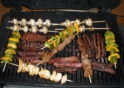
The history of the male/female dominance and power cycles was yet again matched to the neuron bundles between the hemispheres of the brain. All is known, and was explained. Objection was futile at the moment, but things are changing.Claudice walked in the door, with a broken arm instead of fine wine. Climbing stories resulted, and maybe a reference to motorcycles. Coert walked in, with a gray beard instead of fine wine. RJ did not walk in and therefore missed the Horizon's Edge 02 On The Fence cab reserve of wonderful dried cherry and dry toasted plum flavors. The web slave has 6 more bottles.
The Chitina Red story was told by several people. If you have not seen the Chitina Red story, get there.
The concept of the new AlaskanAlpineClub.org museum was discussed. Consider a new museum. If you send the club your old or new ice axe with your name and date on it, or buy one on eBay and write your name and date on it, and send it to the club, in 100 years nobody is going to know the details, or care. They will just see a cool old ice axe of these times and know that a person with your name was a climber back in these days. Now, try to get something of yours, with your name, in an established museum that will be displaying your item in 100 years, to recognize the wisdom that most climbers do not yet recognize. The address is on the club website. Do not wait, or the museum might become picky before you get around to it. Or send your spouse's climbing gear, just to get rid of that stuff.
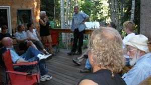
The imagery and functional UIAA (International Union of Alpinist Associations) associations with mountain climbers and climbing organizations were discussed with excessive credit for UIAA, and the logical less than zero credit earned by the amusing American Alpine Club sorts. That discussion changed to a planned Chulitina River run next week, of course. Well the report by the University of Alaska adventure coordinator was graciously accepted because he wore such conservative clothes that he was the respectable looking one of the lot. It was a disguise. He was doing more current adventures that some of those present.The Alaska pro ski team members were evaluated, by name. A new dog was taught to beg for food in the kitchen, while the owners were blithefully yakking away on the other side of the counter. Benowitz just acquired a snow machine. Think snow. Levy left today for Europe, to bring back a couple cases of magnificent Bordeaux, or a very good excuse. The ProjectNight.com lacewood LED light fixture project was explained in more detail than the ProjectNight crew figured out. Earthworms are now successfully overwintering in local gardens. That is a new phenomenon, for the first time since their local ancestors became coal. The current Antarctic Report was filed and put in the freezer. Fairbanks architecture was explained. First build a house quickly and get into it before winter. A few years later when you finally get the money, jack up the house and build a basement under it while advising everyone else to not do it that way.
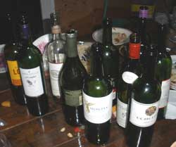
The COMPLETE description of your god was presented and verified against any question anyone could introduce. It went to the edge of the universe, and slightly beyond. Last week's discussion of Alaska climbing history was modified. The Fairbanks First Friday art openings tomorrow night were detailed by those present who were hosting shows or exhibiting in them. The progress of the new national tax scam relating to the "storm water study and treatment" was described for several States that are now imposing that scam as local taxes. Reason # 197,351 for Alaska to become an independent nation: To avoid association with people who are so easily deceived that they perceive a storm water study and treatment tax as something other than just another of countless taxes being piled onto the people to get more money to support more Presidential Ego Gratification Wars. After the storm water tax, the storm wind tax will be imposed. The DemocanRepublicrats are as insatiable as were the Romans and Soviets.And while the US is taxing itself into collapse, on schedule, in the last 10 years the Ruskies on the Kamchatka Peninsula have changed from doing anything to get American dollars, to doing everything for themselves and requiring Americans to convert dollars to an international hard currency. The US DemocanRepublicrats and their idiot supporters sincerely believe they can tax and spend their way out of taxing the productivity out of the people, and print more money to solve the problem of printing too much money. Anyone else would have to buy a ticket for a show that good, with a hard currency. The Romans started it all by alloying the silver and gold coins with lead. They just lacked the paper mills running overtime for the Washington DC empire. Lead has more value that dollars.
The history of the Alaskan and Alaska (no n) Alpine clubs was summarized with the story of when the local mountain climbers went to the "tea and cookies" University of Alaska, environmentalist Alaska (no n) Alpine Club slide shows at the university. Shortly after the lights went out for the shows in Shiable Auditorium, the popping of pop-top beer cans could be heard among the climbers. Damn mountain climbers incessantly insulted the "tea and cookies" standard of the University environmentalists who insist that they represent the climbers. The University of Alaska environmentalists just cannot tolerate the humans, which is why they support the National Park Service against the climbers, in the name of climbers, much to the robust laughter of the climbers.
And that is the full report, or that part of it.
24 July 2008: PHOTOS IN CAMERA
The evening's featured food was the right-from-the-river Chitina Red salmon, on account as one of the folks barely got the rest of his catch in the freezer before showing up at BBQnight.
The featured lecture was a history of Alaska climbing and climbers. Highly varied and experimental alpine climbing techniques saturate Alaska history of yesterday, today and plans for next week. Innovative and varied mental arrangements of Alaska climbers have illuminated knowledge not known to the normal lower 48 climbing community that tends to gravitate toward the norm rather than the more interesting ends of the bell curve. In the lower 48 climbers start as slightly unusual and strive to be normal. In Alaska climbers start as end-of-the-roaders and learn things in the Alaska mountains that do not quite achieve transfer by language, or beyond small groups of Alaska adventurers who do not blend well with humans. The unusual style of the famous Rudy Schmidt was expounded upon. Pain can be turned into ecstasy with a proper vision of the summit. Fairbanks climbers climb in the winter to enjoy the warmth of the Alaska Range. A preferred climbing lifestyle can be found in certain villages located near rarely if ever climbed, spectacular opportunities, where the men go hunting and a climber goes climbing with their wives.
The current Denali and Kotzebue climbing reports were presented. All is as it should be.
A North Slope adventure equipment evaluation report involved the ideal European design lightweight boots for crossing the many rivers and bogs associated with summer river corridor travel. By the end of the adventure, the evaluator was just walking through the water with his regular boots and letting them dry out later if they did, like the locals.
A formal toast was presented in memory of Dave DeVoe, a magnificent Alaska climber and adventurer of previous years. His classic ice axe was added to the BBQnight display of classic old outdoor adventure stuff.
One of the males dropping by for the camaraderie of the adventure crowd mentioned his really good time with a visiting female adventurer, for awhile. "We were both into all the same things, including women." The mountains are always there. The humans are, well, humans.
The wine selection included a certain bottle that was hidden in the usual hiding place by the sink, known only to those who may seem to be attentive to what you are saying but can detect the vibrational energy of a better bottle of wine the moment it gets within vintage perception radius about 20 feet from the house. We may have to find a new hiding place.
Larry, of the Larry and Gary show gave a concluding lecture on the adventure attributes of an NC-Prudhoe-Fbk-enroute back to NC (or some place in the other 48), BMW tour. Just get a second mortgage, buy a beemer, abandon both of the mortgages and the house, point the bike north, grab a couple cans of spray paint, run the border at 110 mph, pull over in the trees around the corner, repaint bike, switch the license plate, slap a Canadian flag decal on your helmet, and keep on biking north, just for the fun. Bring a coat.
That is the full report, except for the part about a new route off the McGuire glacier, that we don't want no mere riffraff knowing about before we bag it.
17 July 2008:
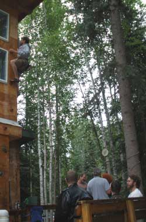
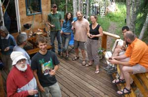
Fresh Bristol Bay red salmon with celanthro, fresh Yukon River king salmon, Alaska Range caribou, Yukon River moose, ample wine, single malt Kentucky whisky, a smattering of healthy food, and the usual suspects. A few unusual suspects as well.
Fresh Basil Vodka. Well, no, we did not have any, but we may have by next week. The Alaska blueberry wine was rather good.
The guy from Michigan or one of the middle M States must go back to graduate, but now has a job waiting on his return, if he does not first find gold on his current kayaking adventure. The guy working for a local air taxi service, who just got back from a grand flight offered grand stories. The beautiful woman with the intriguing Peru stone specimen necklace pendant may still cash in her return flight ticket to, ah, somewhere south of here. The Democrat politician activist was the only guy to climb the climbing wall to the top. He may have therefore got some votes for his candidate. Well, the Libertarian did not even harness up, but he did climb a short way without being roped in. Might have got one vote for his candidate. The sort-of public relations / political science / communication guy was advised against any of what he thought he wanted to pursue.
We planned the careers of several of us, in case we grow up. Always good to have a plan. Beats working.
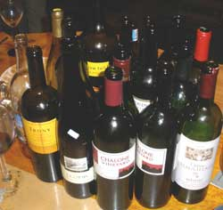
We rhetorically understood the descriptions of Flagstaff and Michigan, but quickly advanced both of them to Fairbanks, and did not slow down while passing by.
Casual inquiry was made in regard to who was carrying what . One person pulled out a camera and laughed, while most of the others instinctively put their hands on certain pockets, and inconspicuously looked around.
The report on Karl walking around the world, or maybe around the local coffee shop as usual, was presented. After several years in Fairbanks, the walking around the world story is not unlike the web slave's climbing stories.
Stand back everybody. The web slave is about to hit the upload button. If you see sparks, just restart your computer, and hope for the best.
10 July:
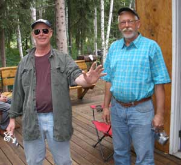
The Larry and Gary Show arrived on time from Pennsylvania, via motorbikes, after a cruise to Prudhoe Bay. Larry, or maybe it was Gary, described a deep slushy snow stretch during which he later could not identify why or how his bike remained on the road. And from there the biker stories went to places not on this planet, amid no small volume of laughter. The rest of their adventure was re-routed along several routes by several of those present with all the data about where they wish they were.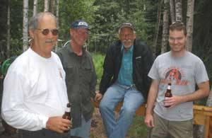
Mo and Logan arrived for the summer. They left Scotty Ann (sail boat) at the east corner of Brazil this time. Fairbanks must therefore endure another summer with another shark cruising society. Logan is a lawyer.The guy who just got back from three weeks of scientific scuba diving out near the end of the Aleutian chain brought a modicum of magnificent stories. Something to do with the sea otter die-off related to the killer whale population surge resulting in the sea urchin population explosion. Well, something detracted from the primary killer whale food supply (could not possibly be over-fishing by the excessive human population), that caused them to grab the sea otters they normally ignore, which left the prolific sea urchins normally eaten by sea otters, with no decimating factor. Well, sea urchin gonads are a delicacy. Expect to see more of them in the seafood section at your favorite food store. And then killer whale steaks. With humans eating more than any other species, the feeding frenzy increases with the population.
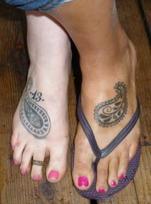
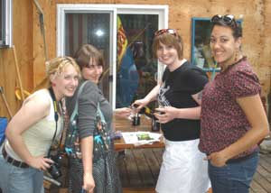
The quest for artificial Christmas trees at the dumpsters, for the local artificial Christmas tree forest by the AlaskanAlpineClub HQ swung the entire conversation to the eclectic and intellectually advanced society of Dumpster Divers. If you want to learn innovative knowledge, go to Fairbanks. If you are there, and you still want more, go to the Dumpsters and enjoy conversations with Larry the Lakota, the Burlap guy, Philip or the others. What do you want to know about humans? Attend a semester at the University of Dumpsters, Fairbanks campus.The Chalone Monterey Valley Cab, 04 and 06, was remarkably fine wine, complementing the usual array off the grill.
The pair of paisley pattern foot tattoos graced the conversation of art, and no few concepts related to art.
A cell phone photo of a Russian secret agent in an underground Iranian nuclear facility arrived during the function, but it was an earlier photo because she was here at the function.
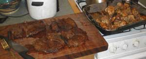
Certain other concepts were taken to certain extents.
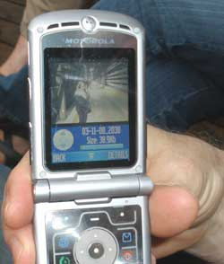
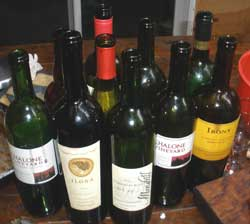
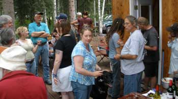
3 July: Ah fer good grief sakes the lawyers showed up again. Lawyers. We put up with them. They actually believe the rhetorical illusions they were taught in law schools. They asked fewer questions of the glaring contradictions taught by law schools, than Saddam's Republican Guard asked of their superiors, or DemocanRepublicrat voters ask of the DemocanRepublicrat Regime. Like, zero.
We let them say what lawyers say. If their lower 48 colleagues knew that lawyers showed up at BarbecueNight.com, they would be disbarred. They are revealing all the institutional illusions of lawyers. What these local lawyers cannot understand, even if they read these words, because they are fellow end-of-the-roaders, is that they are among end-of-the-roaders, therefore people who think. At the end of the road, you are thinking, or you soon go back, or you disappear. The ones who disappear learn what is beyond the end of the road. (John Waterman, Write another letter to the Alaskan Alpine Club. We enjoyed your previous letter.)
There is a reason lawyers normally party only among themselves and people of their ilk who ask no questions of contradictions. If you are among thinking people, everything a lawyer says is identified as a lie, the attempt to fool people into believing that the inferior laws (cash to lawyers), prevail above the superior laws (protection of individual rights).
So the local lawyers who incessantly tell us like it is, to flatter their great power over we mere peasants, are telling us all the processes of criminal fraud used by lawyers, court judges and cops unlawfully applying the inferior laws above the superior laws. They could read these words, and not figure it out. They will be telling us like it is the next time they show up.
It is okay. We tell them like it is. Near as I can figure we are 100 percent correct, and they are 100 percent in error. Would you not agree? They are lawyers.
At BarbecueNight.com we can even put up with National Park Service rangers. It is an eclectic group.
PHOTOS LATER
Well, the party really started across the street at Brian's, then back to Dick's, then over to Brian's again, then back to Dick's, then a little of each, then the late Brian crowd came back to Dick's.
According to the stenographer's preliminary notes, we analyzed conspiracies as pure conspiracies, regardless of the initial contradiction. We went through 9/11, JFK, the Boxer Rebellion and some conspiracies somewhere in the galaxy. Wait, we are somewhere in the galaxy. Therefore scientific verification of the concept. Most of the conspiracies are accurately stated. They just flatter the humans, perceiving that humans can orchestrate the conspiracies as described. In fact all the conspirators are independently striving for more personal power, and power is serving itself above the humans. Power is the middle man dictating the game. The ignorant humans think humans are dictating the game. Amusing lot.
Be careful riding bicycles. You can break your coxis. Painful.
Do not believe adults. Look at the world. Adults caused what you complain about. Do not believe adults.
The plan to most effectively assist and derive a modest income from the post mass package tourism programs was advanced. It is designed to direct the previous tour clients to the real Alaska experience after the tourists got the initial overview package. If you are a second trip tourist to Alaska, and your options list mentions BarbecueNight.com for what is actually happening in Fairbanks on Thursday night, the plan was initiated. Very good wine is recommended.
The support for Alaska independent, among the US military personnel stationed in Alaska, is now about 82 percent. The feds can do nothing. Go ahead George, start another war. Your generals will tell you that the troops support you. That is why your appointees selected those amusingly idiot generals.
The entire Nome chapter of the prestigious Alaskan Alpine Club arrived. The climbing wall was climbed. A formal report on the Nome winter climbing season was presented. Nasty weather this winter, primarily on the weekends that the Nome chapter of the prestigious Alaskan Alpine Club was able to get away from the house.
The Unitarians again represented their position well in regard to the Christians and a gaggle of other churches.
Clem Rawert stories were told. They are interesting stories. Clem does interesting things.
Eleanor and the guy with her represented Northeast Tennessee admirably. There are certain connections between the common folks of Alaska and the common folks of Tennessee, in addition to the local distillates.
A copy of the Law Officer's Pocket Manual was presented, with a related dissertation. Well, it is an eclectic group. All branches of the government are represented. At the end of the road, the cops are end-of-the-roaders. In the future, the common people will recognize the result of the government's so called public schools NOT, read that again, NOT teaching the basics of law presented in the Law Officer's Pocket Manual, knowledge reserved for only law officers and insiders who therefore use the law as a proverbial single edged sword to maliciously threaten and attack the citizens whom the government schools are intentionally keeping ignorant of their rights described in law. The government can do nothing to prevent the ultimately inescapable public recognition. All power-based empires collapse unpleasantly. The cops, lawyers and judges might currently lavish in the material wealth and ego gratification they derive from fooling and threatening the people out of their rights, but eventually the people recognize that they and their families were made fools of by cops, lawyers and judges. Not a time to be a cop, lawyer or judge. The recognition time is usually unpredictable and sudden. Just a normal matter of ongoing history, easily verified.
The party next door, not across the street, showed up. The direction of certain discussions suddenly zinged off on unknown vectors to unrecognized dimensions. They too will be commonly known in the future. It was 400 years, count them, 1, 2, 3, 4, and so forth, between the time Leonardo di Vinci drew the plans for human flight, and the time the Wright Brothers used them to effect human flight. 400 years. We fly now. A little late, but we fly now. The knowledge of the process to immediately end all wars, defeating all opposition, has always been known. It is available today. The knowledge is most feared by the peace organization leaders. The knowledge would end the excuse for their organizational power. Might be another 400 years before anyone effects peace. Currently no incentive. The human comedy has the thinkers with the knowledge laughing too much.
A sudden recognition of a wine drought on the deck table sent a lawyer off to the wine cellar. The lawyers only know process, not the law. They were taught process, not law. The law is irrelevant to them, since every human action is not lawful under any of many inferior laws, the only laws considered by lawyers. The merits or even the issue of any case are immaterial the moment lawyers start working on the case. Guilt or innocence is determined as an aside, at whim of a judge, before the case is started. Process is the only thing the lawyers are effecting. You can listen to lawyers, and write these words. Lawyers can read these words, and understand none of them, since to them process is law, much to the amusement of the observers.
The Rituals Committee noted that the Muslims bow to the East, and the Americans shoot guns toward the nearest federal building, as general social patterns. Just human nature I guess.
The call for adjournment was entertained, the grill turned off, and the array of wine bottle corks thrown into the cork pile.
26 Jun: Another classic and the camera guy has yet to figure out how to transfer the pics from his new camera. A dissertation on aurora cycles brought forward the question of why pulsating auroras have been comparatively rare in the last couple decades, with no answer. More funding is required for more studies, of course. Astronomical cycles and species/ecosystem cycles, illuminating the necessity of extensive extinction processes, were followed by the flaw of IQ measurement of knowledge and other human interaction inefficiencies. That with the male/female brain difference illuminated the marginal abilities of the humans, with breeding being their only sustainably successful project so far. Just as extremely valuable knowledge was about to be synthesized, the steaks off the grill came forward and the better bottle of wine was uncorked.
It was very good wine indeed, and a dissertation on wine flowed forth.
Don informed us of his art show at the next First Friday. The beautiful woman who recently returned from New York City, wearing art-quality garments from Macy's, described the NYC scene, not unlike the BarbecueNight scene. The party next door drifted over to BarbecueNight, and tattoo art was discussed extensively, along with a comparative analysis of Unitarianism, Buddhism, Christians and concepts extending into Astronomy Picture of the Day online.
Climbing on the deck climbing wall was limited to the lower pitch because of two bird nests at the top under the eve. And that is the full report.
19 Jun: The web slave got a new camera. He has not figured out how to use it. The Syracuse New York guy from New Zealand, and his way cool grad student, were analyzing the Black Rapids Glacier research data preparation process prior to proceeding to the glacier the following day. The Fairbanks real artist in town after a several day live-on-board canoe trip across the Louisiana backwaters, among alligators, presented a computer show of his cool sculptures in Louisiana to where he will return in a couple weeks unless we get him fired from his Louisiana job. Might be difficult. He is an artist. Easy to get a government chap fired with an inherently intercepted phone call denying an al Queada connection, but artists never have jobs worth keeping anyway. Moose and caribou stakes on the grill. Better than average wine.
12 Jun: The web slave returned from his southern adventure. His camera is on the fritz. The topics of the evening were vastly beyond his ability to remember. Something about a compassionate overthrow of the government, to save it the embarrassment of collapsing completely on its own with nobody to blame. Moose, caribou and salmon on the grill.
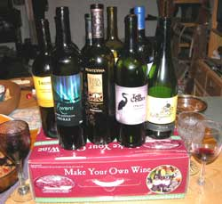
17 April: Fine wine, wild adventure stories and a computer slide show of exotic lands somewhere in the world.
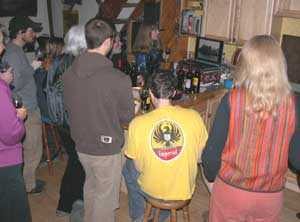
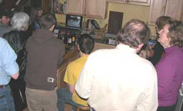
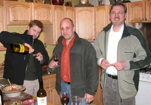
10 April: Who but Karl the Brit walking around the world still caught in the maze of the Russian visa paperwork adventure after surviving the Bering Strait walk-across, Russian jail, a stretch of frozen Siberian wasteland winter tundra, re-provisioning in Fairbanks as usual: Encounters the Russian Bering Strait proposed bio-fuel drive-across advance recon team reconning the interior Alaska route that naturally goes right through BarbecueNight.com, as usual.
That is them evaluating some bio fuel commonly used at BarbecueNight.com.
We therefore were honored with the Russian recon team giving us a dissertation on all things related. We offered the usual array of "it can't be done", and "but if you do it this way".
If only the Russians had not sold Alaska, we would be free now, instead of under the Washington DC war regime jackboot.
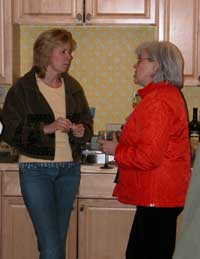
Unlike the adventure crowd laughing, drinking and explaining in great detail what was only imagined but sworn to be true, there was actual social progress being planned over in the corner.
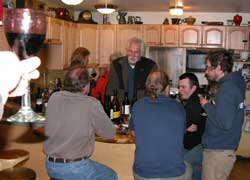
Expect a full report on the west to east Bering Strait wheeled vehicle bio-fuel drive-across or up and over around back down, maybe some zig zags, when the full report is prepared.
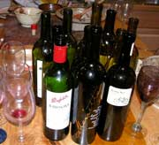 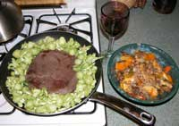
There was a lot more discussed, but it is all secret, this time successfully because the feds got confused as to who was assigned to be spying on whom at which party so they all showed up at the other place except for us triple agents who just feed the feds what they want to hear like we did for the ah, well, its all secret, you know.
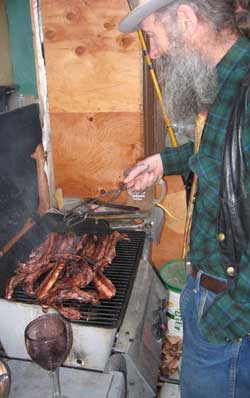
3 April: Caribou ribs and the unusual other stuff. Maybe a bottle of wine in there somewhere. The Homer WinterKing.com salmon went faster than the camera exposure speed could capture.
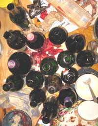
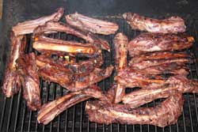
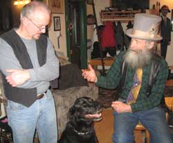
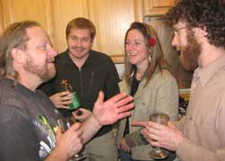
Yeah, that is Karl the guy still walking around the world, off course and behind schedule as usual. He told the Russian far east stories about the vast frozen Siberian wastelands that he intends to get back to just as soon as the new Russian American missile defense shield agreement facilitates the new visa changes written into the agreement to adequately monitor Karl's progress when it starts progressing again. Expect the same scene on some Russian websites if he ever gets out of the frozen Siberian swamps, after he gets back to them, perhaps reaching Yakutz this year, or next.
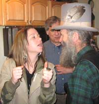
Some theatrical presentations. Shakespeare if I remember that scene, a common BBQnight stage topic.
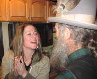
Several of the BBQnight gentlemen and gentlewomen are well versed in theatre. Not entirely educated in the comedy of real life, but slowly learning their lines. "Mission accomplished." "Read my lips. No new taxes." "We drop the bombs in five minutes." "We are a nation under the rule of written law." "The government is here to help you."
Among many of his fine scripts discussed at BBQnight, Shakespeare's eloquent one line dissertation on lawyers is a BBQnight favorite routinely quoted.
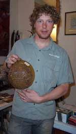
27 March 2008: The every Thursday night barbecue night at Dick Flaharty's this Thursday night included a fun fund raising auction to help sponsor Tyson's US ski team training and competition adventure.
That is Tyson holding a magnificent David Porter (of Helena Montana) pottery bowl. Way cool design and concept on the bowl.
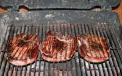
A little barbecue action as usual.
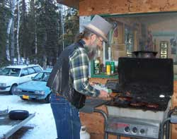
Spring time. Snow has melted off the barbecue grill.
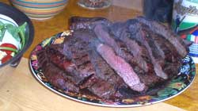
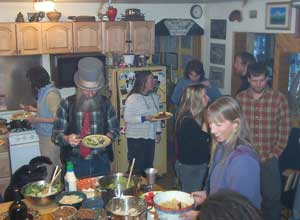
A little food and wine action.
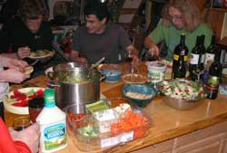
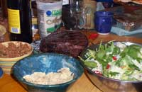
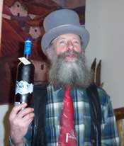
A good auctioneer will wear a top hat. So will an average auctioneer, or anyone you can get to volunteer to be the auctioneer.
There were some ski team stories told, but more stories about the sort of things that were auctioned, from an antique ice axe to a ski joring dog harness, entry way ski rack, cabin stove thermal electricity production contraption, no few pair of skis, a boutique spa basket of all things, moose steaks, local blueberry liquor, an impressive red/gold blown glass beer mug, bicycle poggies of course and all manner of stuff. Good deals were had, and much laughter kept the auctioneer wondering what he just said.
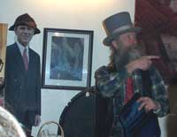
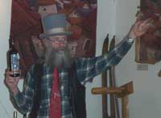
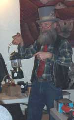
In fact folks were having so much fun we forgot to conspire to overthrow the government. The US, Chinese and other malicious government folks could read those words and still not figure out the wisdom of not harassing the people with meddlesome government bureaucracy, so we will get back to overthrowing the government just as soon as we stop laughing.
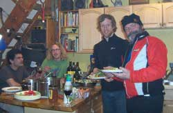
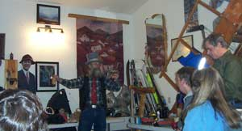
Page 8 September 08 - December
08
Page 9 December 08 --- May 10
Page 10 September 10 - Present
Page 1 November 06 - April 07
Page 2 May 07 -------- August 07
Page 3 August 07 ----- October 07
Page 4 October 07 ---- December 07
Page 5 January 08 ---- February 08
Page 6 February 08 --- March 08
Links